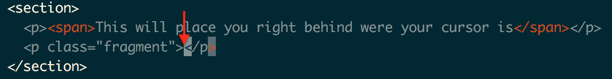
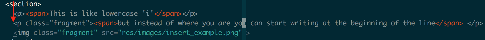
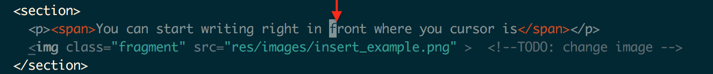

Vim-Basics
Lesson 2
Cuahuctemoc Osorio (Temo)
github.com/cclulu
'i'
You can start writing right behind where you cursor is
'I'
This is like lowercase 'i'
but instead of where you are you can start writing at the beginning of the line
A good way to remember both of these is:
Insert
'a'
You can start writing right in front where you cursor is
'A'
This is like lowercase 'a'
but instead of writing where you are
you are able to start writing at the end of the line

A good way to remember both of these is:
append
'o'
This will shift all your text down one line
create an empty line below where you are
and put you in insert mode
'O'
This is like lowercase 'o'
but include your current line in the shift
and put you in insert mode
A good way to remember both of these is:
open
'u'
This one is not a way to go into insert mode
but I figured it would be a good idea to mention
This is a simple one
all it is an undo
'U'
Not as used but good to know
This is just undos a whole line
'ctrl-r'
since we talked about undo
probably a good idea to mention redo
A good way to remember this one is:
control redo?